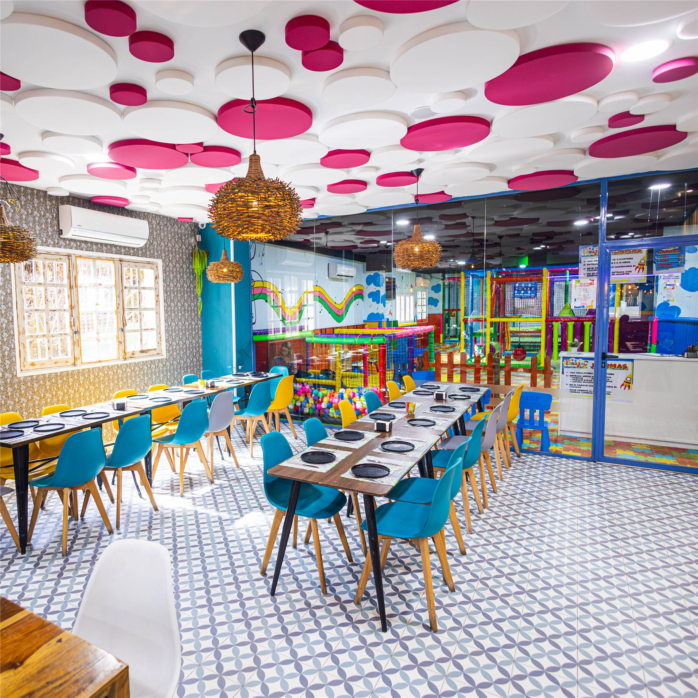
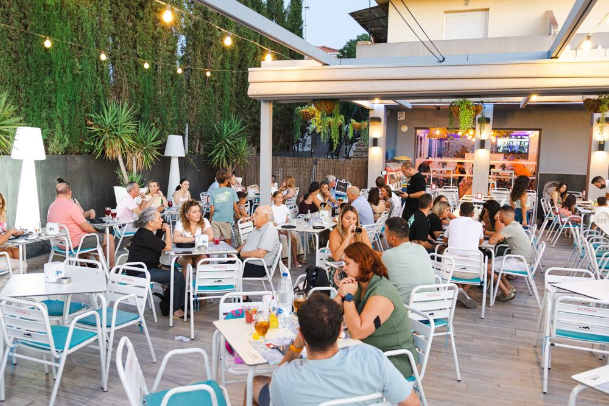
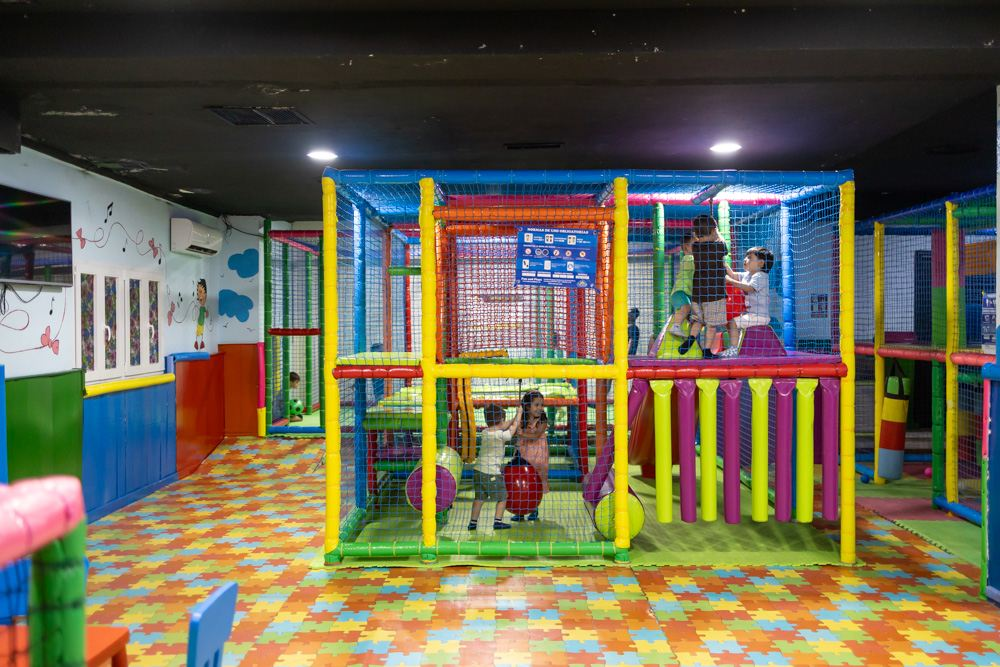
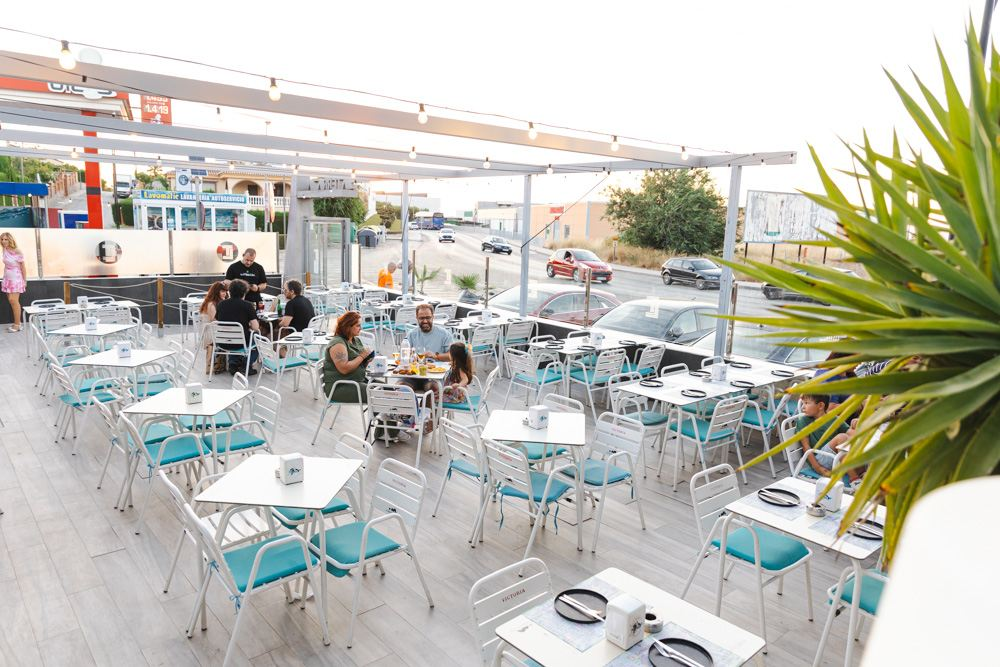
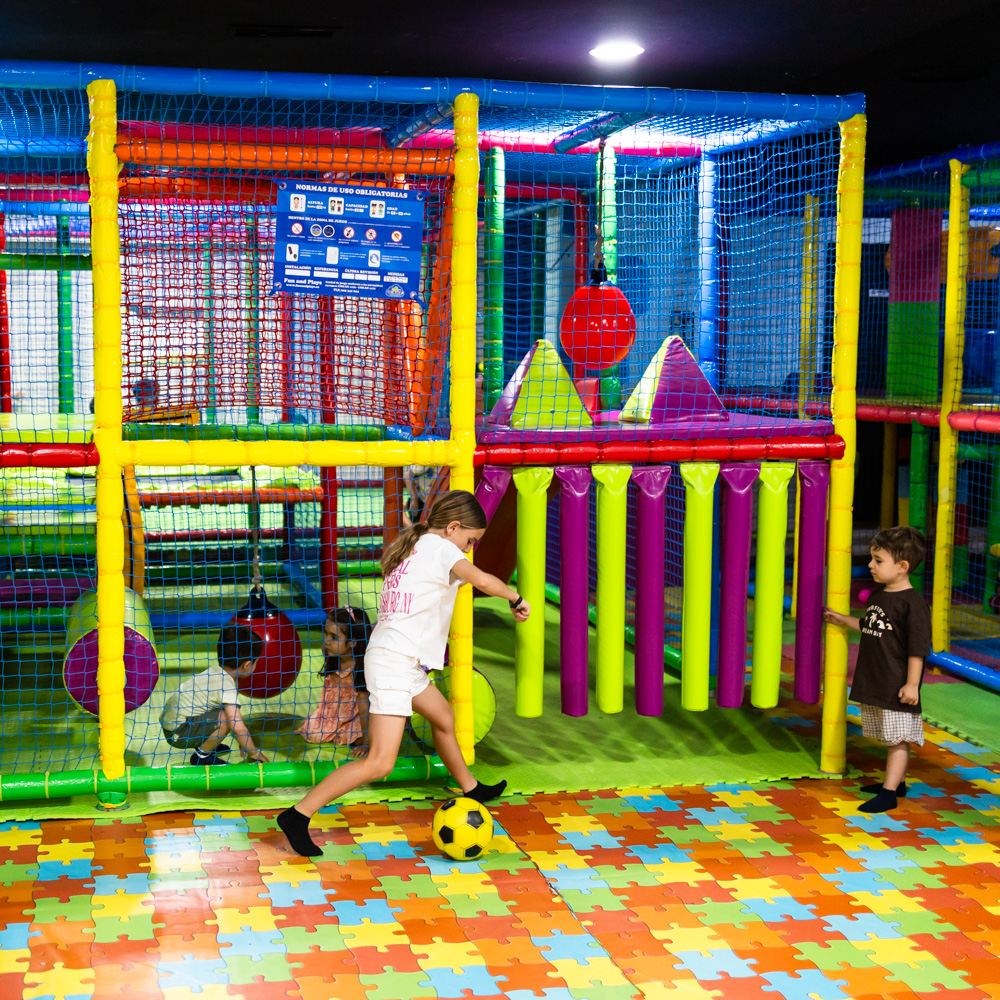
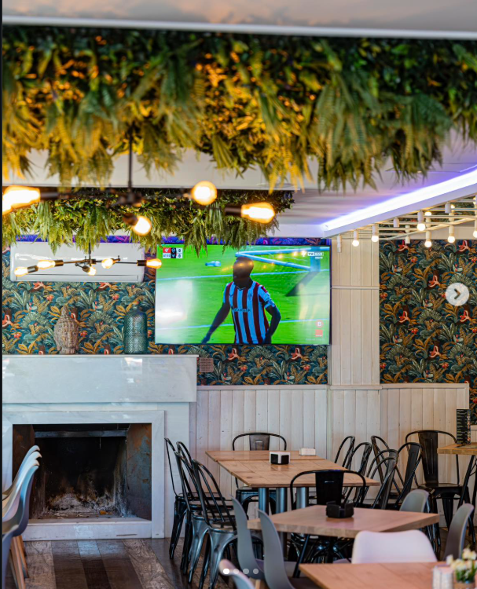

Comedor familiar
Con vistas al parque de bolas
La cristalera separa el salón de la zona de juego: puedes ver a los niños y compartir la mesa con más tranquilidad.
Mientras los peques juegan en el parque de bolas, puedes verlos desde el salón a través de una cristalera. Un lugar para comer, reunirse y celebrar en familia en Otura.

Cumpleaños infantiles en Otura
El salón queda separado del parque de bolas por una cristalera: puedes ver a los niños mientras ellos juegan y disfrutar de la comida con más tranquilidad.
Consulta por teléfono las opciones de cumpleaños, los menús infantiles y la disponibilidad.


Sobre nosotros
En La Terraza puedes elegir entre la terraza privada, el salón junto al parque de bolas y un salón con chimenea. Los niños juegan en su zona y los adultos pueden verlos desde el salón a través de la cristalera.
Un espacio al aire libre para compartir
Los peques juegan y tú los ves desde el salón
Consulta la apertura de cada día
Para alargar la sobremesa
La experiencia
Ven a merendar con los niños, a comer en familia o a celebrar. La terraza y nuestros distintos espacios hacen cada visita especial.
Café, comida y merienda para disfrutar a vuestro ritmo.
Espacio pensado para que los niños se sientan a gusto.
Cumpleaños, comuniones y reuniones. Consulta menús especiales.
Ven a visitarnos
Estos son nuestros horarios actuales, pero pueden cambiar según la estación del año. Consulta Google Maps para comprobar si el local está abierto y su disponibilidad antes de venir. Para reservar, llámanos.
Nuestros espacios
Terraza privada, salón junto al parque de bolas y salón con chimenea: tres espacios distintos para disfrutar en familia.
Comedor familiar
La cristalera separa el salón de la zona de juego: puedes ver a los niños y compartir la mesa con más tranquilidad.

Terraza privada
Una terraza privada para disfrutar juntos al aire libre.

Parque de bolas
Una zona infantil llena de color para que los niños jueguen mientras la familia comparte mesa.

Salón con chimenea
Un salón acogedor con chimenea, ideal para reunirse en familia y celebrar juntos.
Así se vive La Terraza
Descubre el ambiente de nuestra terraza y el movimiento del restaurante en un día cualquiera.
Opiniones
“La terraza es perfecta para venir con niños. Comida casera, trato excelente y espacio para que los peques se muevan. Volveremos seguro.”
“Venimos casi todos los fines de semana a merendar. El ambiente es muy agradable y la carta infantil acierta.”
“Ideal para una comida de empresa o un cumpleaños. Nos adaptaron el menú y todo salió genial. Terraza muy cuidada.”
Llámanos para reservar mesa o consultar una celebración.